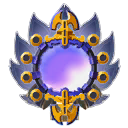
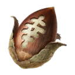
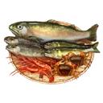

本頁面資訊僅供參考，實際情況請以遊戲內資料為準。
由於直接使用官方翻譯，可能會與其他站內翻譯相異，敬請見諒。
其他公告內容請參照日版當時公告翻譯。

- 活動限定效果

採用GoogleDrive資料夾呈現

| 任務 | 獎勵 | 解鎖條件 |
|---|---|---|
| No.1 『奉納點數』累計獲得500點 | 1/4 9:00後 | |
| No.2 『奉納點數』累計獲得1,000點 | 達成：No.1 | |
| No.3 『奉納點數』累計獲得1,500點 | 5 | 達成：No.2 |
| No.4 『奉納點數』累計獲得2,000點 | 達成：No.3 | |
| No.5 『奉納點數』累計獲得2,500點 | 100 | 達成：No.4 |
| No.6 『奉納點數』累計獲得3,500點
【『第七節』的開放條件報酬】 | 達成：No.5 | |
| No.7 『奉納點數』累計獲得4,000點 | 5 | 達成：No.6 |
| No.8 『奉納點數』累計獲得5,000點 | 達成：No.7 | |
| No.9 『奉納點數』累計獲得8,000點 | 達成：No.8 | |
| No.10 『奉納點數』累計獲得11,000點 | 達成：No.9 | |
| No.11 『奉納點數』累計獲得14,000點 | 100 | 達成：No.10 |
| No.12 『奉納點數』累計獲得17,000點 | 達成：No.11 | |
| No.13 『奉納點數』累計獲得22,000點 | 5 | 達成：No.12 |
| No.14 『奉納點數』累計獲得27,000點 | 達成：No.13 | |
| No.15 『奉納點數』累計獲得32,000點 | 達成：No.14 | |
| No.16 『奉納點數』累計獲得40,000點 | 達成：No.15 | |
| No.17 『奉納點數』累計獲得50,000點 | 5 | 達成：No.16 |
| No.18 『奉納點數』累計獲得60,000點 | 達成：No.17 | |
| No.19 『奉納點數』累計獲得75,000點 | 100 | 達成：No.18 |
| No.20 『奉納點數』累計獲得90,000點
【『第九節』的開放條件報酬】 | 達成：No.19 | |
| No.21 『奉納點數』累計獲得105,000點 | 達成：No.20 | |
| No.22 『奉納點數』累計獲得120,000點 | 5 | 達成：No.21 |
| No.23 『奉納點數』累計獲得135,000點 | 達成：No.22 | |
| No.24 『奉納點數』累計獲得155,000點 | 5 | 達成：No.23 |
| No.25 『奉納點數』累計獲得175,000點 | 200 | 達成：No.24 |
| No.26 『奉納點數』累計獲得200,000點 | 5 | 達成：No.25 |
| No.27 『奉納點數』累計獲得230,000點 | 達成：No.26 | |
| No.28 『奉納點數』累計獲得260,000點 | 達成：No.27 | |
| No.29 『奉納點數』累計獲得300,000點 | 5 | 達成：No.28 |
| No.30 『奉納點數』累計獲得350,000點 | 200 | 達成：No.29 |
| No.31 『奉納點數』累計獲得400,000點 | 5 | 達成：No.30 |
| No.32 『奉納點數』累計獲得450,000點 | 達成：No.31 | |
| No.33 『奉納點數』累計獲得500,000點
【『第十二節』的開放條件報酬】 | 達成：No.32 | |
| No.34 『奉納點數』累計獲得800,000點 | 1m | 達成：No.33 |
| No.35 『奉納點數』累計獲得1,100,000點 | 1m | 達成：No.34 |
| No.36 『奉納點數』累計獲得1,400,000點 | 1m | 達成：No.35 |
| No.37 『奉納點數』累計獲得1,800,000點 | 1m | 達成：No.36 |
| No.38 『奉納點數』累計獲得2,200,000點 | 1m | 達成：No.37 |
| No.39 『奉納點數』累計獲得2,600,000點 | 1m | 達成：No.38 |
| No.40 『奉納點數』累計獲得3,000,000點 | 1m | 達成：No.39 |
| No.41 『奉納點數』累計獲得3,400,000點 | 1m | 達成：No.40 |
| No.42 『奉納點數』累計獲得3,800,000點 | 1m | 達成：No.41 |
| No.43 『奉納點數』累計獲得4,200,000點 | 1m | 達成：No.42 |
| No.44 『奉納點數』累計獲得4,600,000點 | 1m | 達成：No.43 |
| No.45 『奉納點數』累計獲得5,000,000點 | 1m | 達成：No.44 |

| 河川美食 | |||
|---|---|---|---|
| 交換物 | 需求數 | 限制 | 共需 |
| 200 | 1 | 200 | |
|  | 200 | 1 | 200 |
| 30 | 20 | 600 | |
| 30 | 20 | 600 | |
| 20 | 20 | 400 | |
| 20 | 20 | 400 | |
| 20 | 20 | 400 | |
| 20 | 20 | 400 | |
|  | 10 | 0 | 0 |
| 合計 | 3,200 | ||
| 山林美食 | |||
|---|---|---|---|
| 交換物 | 需求數 | 限制 | 共需 |
| 200 | 1 | 200 | |
| 200 | 1 | 200 | |
| 20 | 20 | 400 | |
| 20 | 20 | 400 | |
| 6 | 100 | 600 | |
| 3 | 100 | 300 | |
| 20 | 20 | 400 | |
| 15 | 30 | 450 | |
| 15 | 30 | 450 | |
|  | 10 | 0 | 0 |
| 合計 | 3,400 | ||
| 櫸木木材 | |||
|---|---|---|---|
| 交換物 | 需求數 | 限制 | 共需 |
| 300 | 1 | 300 | |
| 300 | 1 | 300 | |
| 3 | 0 | 0 | |
| 合計 | 600 | ||
| 檜木木材 | |||
|---|---|---|---|
| 交換物 | 需求數 | 限制 | 共需 |
| 300 | 2 | 600 | |
| 3 | 0 | 0 | |
| 合計 | 600 | ||
| 杉木木材 | |||
|---|---|---|---|
| 交換物 | 需求數 | 限制 | 共需 |
| 300 | 2 | 600 | |
| 3 | 0 | 0 | |
| 合計 | 600 | ||